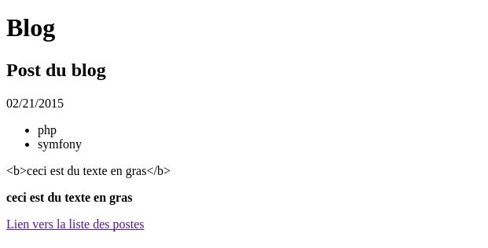

Les vues avec Twig
Symfony utilise le moteur de templating Twig pour aider au rendu des pages. Il présente plusieurs avantages :
- il compile les templates en code PHP optimisé
- il possède toutes les structures de contrôle classiques
- la syntaxe qu’il propose est compacte et souvent plus rapide à taper
- il propose nativement un grand nombre de méthodes et de filtres
- il propose un système avancé de blocs, macros et d’héritage qui permet de facilement factoriser le code
Voyons un exemple. Voici un exemple de code en PHP et son équivalent en Twig :
<ul id="navigation">
<?php foreach ($navigation as $item): ?>
<li>
<a href="<?php echo $item->getHref() ?>"><?php echo $item->getName() ?></a>
</li>
<?php endforeach; ?>
</ul>
<ul id="navigation">
{% for item in navigation %}
<li>
<a href="{{ item.href }}">{{ item.name }}</a>
</li>
{% endfor %}
</ul>
Le base
Retournons à l’origine de l’appel du template, c’est à dire dans le contrôleur et ajoutons quelques paramètres au template :
return $this->render('EpsiBlogBundle:Blog:show.html.twig', array(
'id' => $id,
'name' => 'Post du blog',
'date' => new \DateTime(),
'tags' => array( 'php', 'symfony' ),
'html' => '<b>ceci est du texte en gras</b>'
));
Ensuite enrichissons un peu le template d’affichage :
<!DOCTYPE html>
<html>
<head>
<title>Blog</title>
</head>
<body>
<h1>Blog</h1>
<h2>{{ name }}</h2>
<p>{{ date|date("m/d/Y") }}</p>
<ul>
{% for tag in tags %}
<li>{{ tag }}</li>
{% endfor %}
</ul>
<p>{{ html }}</p>
<p>{{ html|raw }}</p>
<a href="{{ path('epsi_blog_index') }}">Lien vers la liste des postes</a>
</body>
</html>
Voici le résultat :

La syntaxe est très simple :
{{ ... }} affiche quelque chose ;{% ... %} fait quelque chose ;{# ... #} n’affiche rien et ne fait rien : c’est la syntaxe pour les commentaires, qui peuvent être sur plusieurs lignes ;
Accès aux variables
{# name = 'Jack' #}
{{ name }}
{# user = array( 'name' => 'Jack' ) #}
{{ user.name }}
{{ user['name'] }}
{# user = new User( 'Jack' ) #}
{{ user.name }}
{{ user.getName }}
{# pour forcer l'appel à une méthode #}
{{ user.name() }}
{{ user.getName() }}
{# passage d'argument à une méthode #}
{{ user.date('Y-m-d') }}
{# On peut aussi utiliser la fonction attribute #}
{{ attribute(object, method) }}
{{ attribute(object, method, arguments) }}
{{ attribute(array, item) }}
Affectation de variables
{% set foo = 'foo' %}
{% set foo = [1, 2] %}
{% set foo = {'foo': 'bar'} %}
Les filtres
Les variables peuvent être modifiées par des filtres. Les filtres sont séparés par des pipes (|) et peuvent avoir des paramètres supplémentaire entre parenthèses.
{{ name|striptags|title }}
{{ list|join(', ') }}
On peut également appliquer un filtre sur une portion de code :
{% filter upper %}
This text becomes uppercase
{% endfilter %}
Les fonctions
Les fonctions sont appelées pour générer du contenu. Elles sont appelées par leur nom suivi de paramètres entre parenthèses :
{% for i in range(0, 3) %}
{{ i }},
{% endfor %}
Les structures de contrôle
Les structures de contrôle sont des tags dans Twig.
Conditions
{% if user.isSuperAdmin() %}
...
{% elseif user.isMember() %}
...
{% else %}
...
{% endif %}
Boucle
{% for user in users if user.isActive() %}
...
{% endfor %}
Le tag {% for %} met à disposition au sein de la boucle un variable loop qui contient les attributs suivantes :
index : numéro de l’itération courante en commençant par 1index0 : : numéro de l’itération courante en commençant par 0revindex : nombre d’itérations restantes avant la fin de la boucle en finissant par 1revindex0 : nombre d’itérations restantes avant la fin de la boucle en finissant par 0first : est-ce la première itérationlast : est-ce la dernière itérationlength : nombre total d’itération
Les types de variables
Les types de valeurs sont similaires aux types natifs de PHP excepté qu’il fait la différence entre les tableaux et les hashs (tableaux associatifs) :
- les chaînes de caractères
"Hello world"
- les entiers
42
- les flottants
42.56
- les tableaux
["foo", "bar"]
- les hashs
{"foo": "bar"} {'foo': 'foo', 'bar': 'bar'} {foo: 'foo', bar: 'bar'} {2: 'foo', 4: 'bar'}
- les booleans
true et false
- le null
null
Les opérateurs
- Mathématiques
- addition
{{ 1 + 1 }} = 2
- soustraction
{{ 3 - 2 }} = 1
- multiplication
{{ 2 * 2 }} = 4
- division
{{ 1 / 2 }} = 0.5
- division avec arrondi
{{ 20 // 7 }} = 2
- modulo
{{ 20 % 7 }} = 6
- puissance
{{ 2 ** 3 }} = 8
- Logiques
- ET
and (équivalent du && PHP)
- OU
or (équivalent du || PHP)
- Négation
not (équivalent du ! PHP)
- Binaires
- ET
b-and (équivalent du & PHP)
- OU
b-or (équivalent du | PHP)
- OU exclusif
not (équivalent du ^ PHP)
- Comparaisons
égalité ==
différence !=
inférieur <
supérieur >
inférieur ou égal <=
supérieur ou égal >=
- pour les chaîne de caractères
- commence par
starts
- finit par
ends
- corresponds à
matches (test avec une expression régulière)
- Test
- est égal à une constante
is constant()
- est définit
is defined
- est divisible par
is divisible by()
- est vide
is empty
- est un nombre pair
is even
- est un nombre impair
is odd
- est itérable
is iterable
- est null
is null
- est identique à
is same as() (équivalent du === PHP)
- Autres opérateurs
crée un séquence .. (équivalent de la fonction range) 1..4 = [1, 2, 3, 4]
applique un filtre |
convertie les opérandes en chaînes de caractères et les concatènes ~. "Hello " ~ name ~ "!" = "Hello John!"
récupère un attribut d’un objet . ou []. user.name ou user['name']
- opérateur tertiaire
?: . {{ foo ? 'yes' : 'no' }}
{{ foo ?: 'no' }} est équivalent à {{ foo ? foo : 'no' }}{{ foo ? 'yes' }} est équivalent à {{ foo ? 'yes' : '' }}
- Substitution de chaînes de caractères
#{} dans un chaîne ouverte ace des double quote. "foo #{1 + 2} baz" = "foo 2 bar"
- Contrôle es espaces blancs
Supprime tous les espaces, tabulations et saut de lignes inutiles :
{% spaceless %}{% endspaceless %}
{# name = 'Jack' #}
{{ name }}
{# user = array( 'name' => 'Jack' ) #}
{{ user.name }}
{{ user['name'] }}
{%-, -%}, {{- et -}}
{# user = new User( 'Jack' ) #}
{{ user.name }}
{{ user.getName }}
Les variables globales
Quelques variables sont disponibles dans les templates afin nous faciliter la vie :
app.request : la requête qui a été passé au contrôleurapp.session : la session de l’utilisateurapp.environment : l’environnement sur lequel on travaille (dev, prod, etc.)app.debug : le débug est-il activé ou nonapp.security : le service securityapp.user : l’utilisateur courant
On peut également injecter nos propres variables en ajoutant la configuration suivante :
# app/config/config.yml
twig:
globals:
auteur: moi
Ensuite dans les templates, il ne reste plus qu’à appeller la variable : {{ auteur }}
Les macros
Les macros sont similaires à des fonctions excepté qu’elles sont écrites directement en Twig :
{# dans le template où l'on veut utiliser la macro #}
{% import macro.html.twig as forms %}
<p>{{ forms.input('username') }}</p>
{# dans le template où l'on implémente les macros #}
{% macro input(name, value = "", type = "text", size = 20) %}
<input type="{{ type }}" name="{{ name }}" value="{{ value|e }}" size="{{ size }}" />
{% endmacro %}
Héritage de templates
L’héritage permet de créer un squelette définissant la structure générale des pages dans lequel on définit des blocs qui seront surchargés par les templates enfants.
Une des bonne pratique pour organiser ses templates est de mettre trois niveaux d’héritage :
- le layout général : il s’agit du design du site. Il est indépendant de celui des bundles. Il contient la structure des page de votre site : header, footer, menu principal, etc. Son chemin exact est
app/Resources/views/base.html.twig et voici la syntaxe pour l’appeler dans vos bundles : ::base.html.twig
- le layout du bundle : il hérite du layout général et contient tous les éléments communs aux pages d’un même bundle comme un menu secondaire par exemple
- le template de la page : il hérite du layout du bundle et contient la partie centrale de la page
Reprenons le template show.html.twig et répartissons le code dans les templates app/Resources/views/base.html.twig et src/Epsi/Bundle/BlogBundle/Resources/views/base.html.twig en remplaçant les parties spécifiques par des blocs et en l’enrichissant un peu :
{# app/Resources/views/base.html.twig #}
<!DOCTYPE html>
<html>
<head>
<meta http-equic="Content-type" content="text/html; charset=utf-8" />
<title>{% block title %}{% endblock %} - Blog</title>
{% block stylesheets %}
{% endblock %}
</head>
<body>
{% block body %}
<div class="container">
<header class="well">
{% block header %}
{% endblock %}
</header>
<div id="content">
{% block content %}
{% endblock %}
</div>
<footer>
{% block footer %}
© Copyright 2015
{% endblock %}
</footer>
</div>
{% block javascripts %}
{% endblock %}
{% endblock %}
</body>
</html>
{# src/Epsi/Bundle/BlogBundle/Resources/views/base.html.twig #}
{% extends "::base.html.twig" %}
{% block title 'Blog' %}
{% block header %}<h1>Blog</h1>{% endblock %}
{% block footer %}
{{ parent() }}
- <a href="{{ path('epsi_blog_index') }}">Lien vers la liste des postes</a>
{% endblock %}
{# src/Epsi/Bundle/BlogBundle/Resources/views/Blog/show.html.twig #}
{% extends "EpsiBlogBundle::base.html.twig" %}
{% block content %}
<h2>{{ name }}</h2>
<p>{{ date|date("m/d/Y") }}</p>
<ul>
{% for tag in tags %}
<li>{{ tag }}</li>
{% endfor %}
</ul>
<p>{{ html }}</p>
<p>{{ html|raw }}</p>
{% endblock %}
Inclusion de templates
{% include 'header.html' with {'foo': 'bar'} %}
{% include 'body.html' only %}
{% include 'footer.html' with {'foo': 'bar'} only %}
Lors de l’inclusion de template, le template inclus a accès à toutes les variables du contexte courant sauf si on utilise le mot clé only. Le mot clé with permet quand à lui de passer des variables au template.
Inclusion de contrôleurs
Pour inclure un contôleur, c’est très simple il suffit d’utiliser la fonction render :
{{ render(controller("EpsiBlogBundle:Blog:menu")) }}
Ici, contrairement à un inclusion de template qui va utiliser les variables de sont template parent, le contrôleur appelé va récupérer tous les données qu’il lui sont nécessaire et les afficher dans une vue.
Twig propose beaucoup de filtres, méthodes et fonctions que vous pouvez retrouver sur la documentation officielle : http://twig.sensiolabs.org/